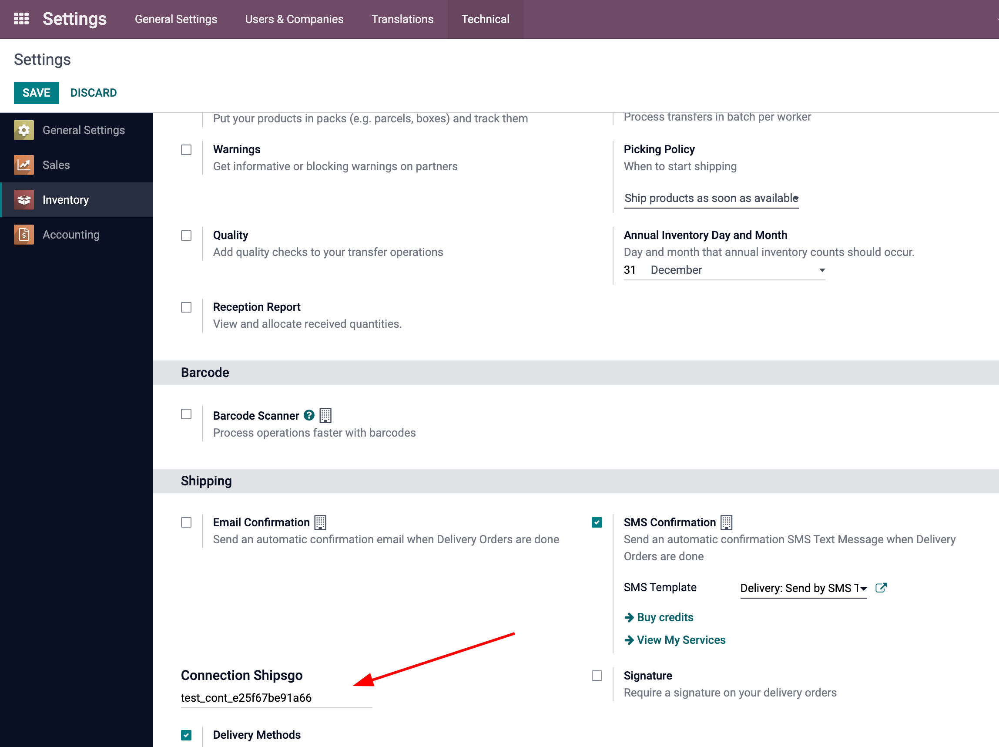
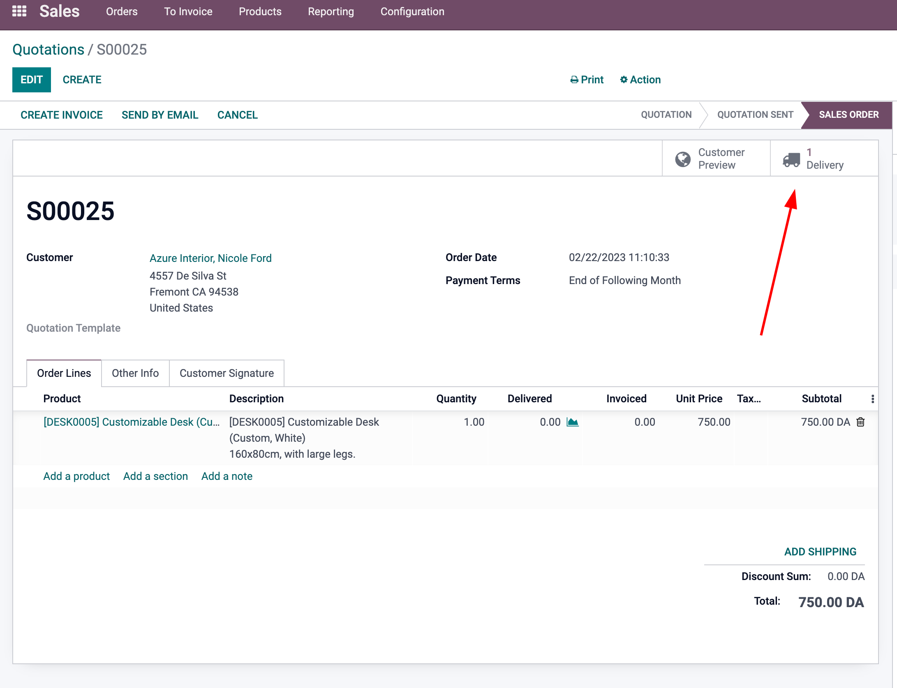
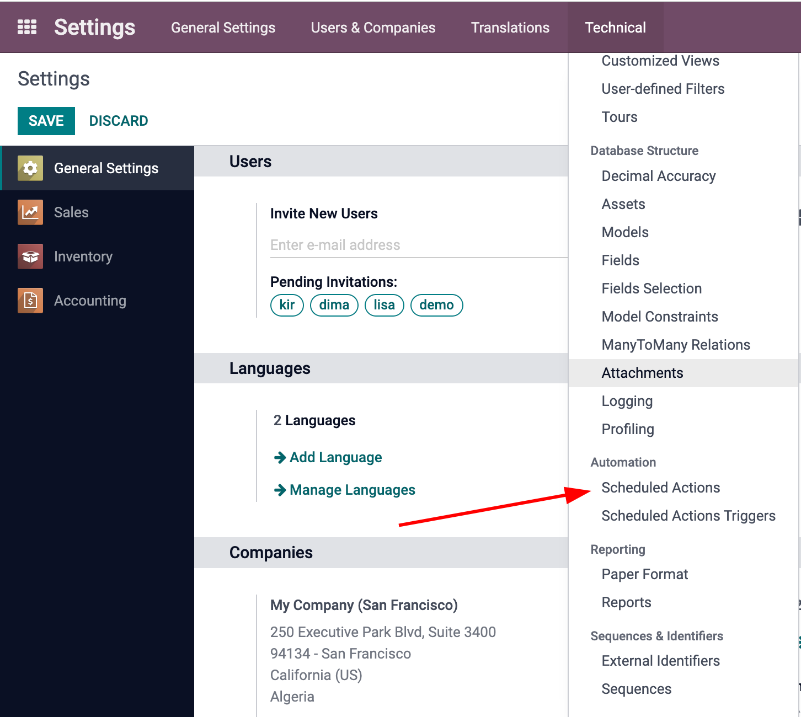
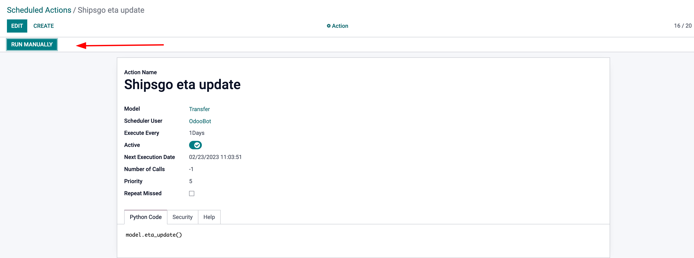
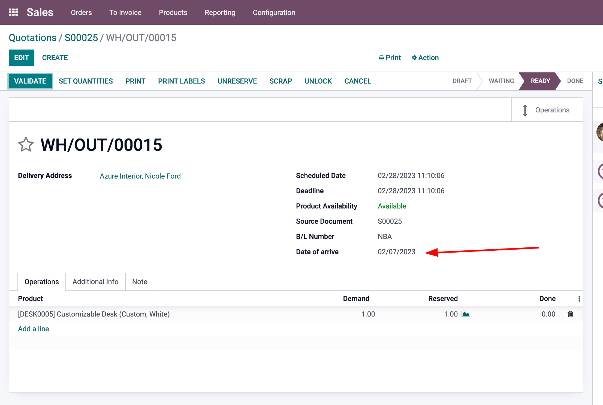

Shipsgo integration
This module makes it possible to automatically update the delivery date from the Shipsgo service based on the container number
Install the Shipsgo integration module. To do this, go to the Main menu/Applications and type in the search 'Shipsgo integration'. Click Install in the found app.

In the settings, in the inventory group, find the shipping subgroup and enter the api key from shipsgo.
In the sales module, we go to delivery
enter the container number in the B/L Number field
You can configure and check the operation of the module by selecting Shipsgo eta update in Scheduled Actions. Here you can set the information update time and start execution manually.
After run the Shipsgo eta update
we go to the sales module, select delivery and there we will see that the arrival date of the container has been updated
Note! Arrival date is updated for deliveries that have not yet arrived and 20 days after arrival
We are Ukrainian software developing company working with odoo.
We specialize on solutions for Ukrainian market, however often do much more.
Would be glad to talk about odoo customization and development for your company or your clients.
Feel free to contact us by:
Email: odoo@netframe.org
Website: https://www.netframe.org